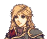

Prologue: Prison Break
Have a unit open the bottom door
To access this chapter, the player must possess the Plucker's Gift at the end of Chapter 26.
Opening
Capital Prison

princessbut yes, I admit that I was totally wrong. You're pretty darn sneaky.
Get out the cell. We're breaking out!
I think they've found us.
We can get all sappy later.
If the upper door is opened
When the door is opened
Every turn, the objective will randomly change to one of the following:
Ellerie reaches exit
Give Up Give Up Give Up Give Up
4 Turns after opening the door
Death Quotes
Ellerie
Princess
Mince
... ...
... Can't stop the bleeding. Damn, guess it can after all.
If Ellerie dies or is caught by the Plucker
... Why do I still have the nagging sense that I've lost something important?
DO NOT overwrite this save file if you wish to see the end of her tale. Make a separate save file!
[Unbroken Cycle begins.]
Ending (stairs reached)
Princess? ... What is... It's not right...
...
[The Picnic begins]
Character Descriptions
The shades have no name or description except for Seguradez.
Ellerie
Yours truly, a prisoner awaiting
execution. What a bloody awful
series of events my life has been.
Princess
A rebellious princess from this declining
dynasty. A dear friend to me and one
of the few people I'd give up my life for.
Plucker's Gift
A price paid for mobility.
-4 Def/Res. +2 Move.
Wisp
A [] from []. A [] to me
and one of the [].
Mince
Some chef the Princess knighted
on a whim. I thought it was bizarre
but I am grateful for that choice now.
King's Knight
Another dog to the throne, serving a
master who deserves none of their
loyalty. What a worthless existence.
Plucker
A chicken it be.
Opening
A trek to some isolated village on our lonesome, and then getting lost!
Being lost is my fault, but in my defence, this map is totally trite.
Besides, isn't a secret investigation more exciting than etiquette lessons, or whatever you noble ladies do?
But I thought we'd be there by evening at the latest!
This investigation better bear fruit, or else I won't let you forget it.
Have a picnic in the beautiful meadows.
not this abandoned ruin.
Why spend so much effort covering this up?
We got some more wolfbait tonight!
Well, they have more than that, but give or take a few dozen.
Turn 2
Turn 3
These Pirate Sages won't step another foot into our town.
Turn 4
Death Quotes
Ellerie
Princess
Rosetta
Ending
Ellerie
I don't want to be alone.
Family name...
Sullied...
Harlot...
Child...
Bastard...
To cease...
Blood...
Vermin...
Lineage...
Vermin...
Lineage...
Princess
That is...
I will have her removed at once!
I could use someone my own age to talk to.
Hey, I'm [] but you can call me []. What's your name?
But it's still...
Pull
Give Up
Give Up
Pull
Pull
Pull
Pull
Pull
Pull
Pull
 ellerie
ellerieIf Gecko is alive
And I thought I knew better than to deal with the unknown.
Was your temptation the same?
But I couldn't. I was a whimpering child. I was too weak to do anything.
All I could do was hurt myself.
We've overcome our struggles, we're free from its influence, aren't we?
Character Descriptions
The starting enemies and the Plucker's shades have no name or description. Many previously-appearing units also appear throughout this chapter, but for expediency they will not be listed here.
Ellerie
Yours truly, a lowly bureaucrat in the
imperial administration. Still doing grunt
work, but no doubt I'll rise up the ranks.
Princess
A rebellious princess from this declining
dynasty. A dear friend to me and one
of the few people I'd give up my life for.
Plucker's Gift
A price paid for mobility.
-4 Def/Res. +2 Move.
[The Princess has B-rank support with both Ellerie and Rosetta.]
Wisp
A [] from []. A [] to me
and one of the [].
Rosetta
As harsh as those years in House Heron
were, I'm beyond grateful to have a true
friend to share those struggles with.
Plucker
A chicken it be.